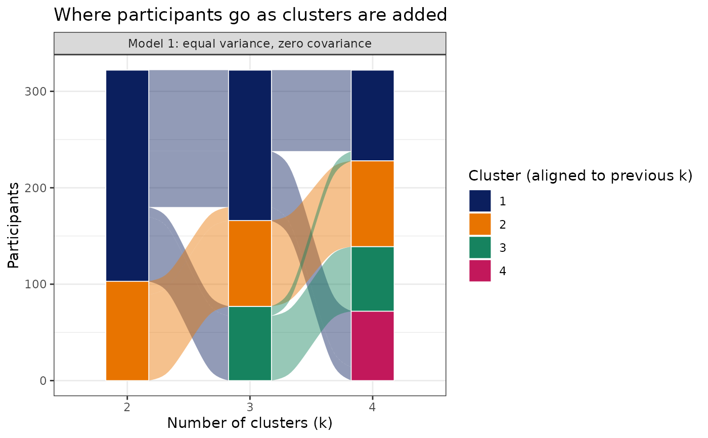

Show how participants move between clusters as k increases
Source:R/PlotClusterSplits.R
PlotClusterSplits.RdAnswers "as clusters are added, is an existing cluster being split, or are participants reshuffled?" For each model family, participants are followed from the solution with k clusters to the solution with k + 1 clusters and shown as an alluvial plot, with a transition table summarizing each step.
Usage
PlotClusterSplits(
object,
models = NULL,
k_range = NULL,
title = "Where participants go as clusters are added"
)Arguments
- object
An exploratory model from
CreateClusterModel_SOM_MClust(), or a data frame whose columns are cluster assignments for the same participants at increasing k (column names such as"k2","k3"; one row per participant; treated as a single model family).- models
Optional integer vector of model families to show (SOM + Mclust objects only). Defaults to every family with at least two consecutive k.
- k_range
Optional integer vector restricting the k shown.
- title
Plot title.
Details
Cluster labels are arbitrary at every k, so each solution's clusters are reordered to follow their largest parent in the previous solution; this keeps a cluster that is carried forward in the same vertical position.
For each step from k to k + 1 the transition table reports:
ParentPurity: the share of participants whose cluster at k + 1 came mostly from their own cluster at k (each cluster at k + 1 is credited to its largest parent). Values near 1 mean new clusters are carved out of existing ones (a hierarchical split); lower values mean participants are reshuffled between clusters.SplitCluster: the cluster at k whose members are divided most evenly among clusters at k + 1 (its largest child holds the smallest share of it), withSplitRetainedgiving that largest share.SmallestNewCluster: the smallest cluster at k + 1 as a share of participants.
With SOM + Mclust, assignments are the phenotypes of participants' best-matching SOM nodes.
Examples
# \donttest{
data("SampleData")
data("SampleVariableTypes")
df_Labelled <- RevalueData(SampleData, SampleVariableTypes)$RevaluedData
model <- CreateClusterModel_SOM_MClust(
df_Labelled, c("age", "AXL", "Adiponectin", "Alpha_1_Antitrypsin"),
method = "exploratory", k_range = 2:4, models = 1,
som_xdim = 5, som_ydim = 5, min_nodes_per_cluster = NULL,
Relabel = FALSE)
#> Warning: Explicit SOM dimensions do not meet one or more requested mixture-support or participant-occupancy targets; diagnostics are retained for review.
splits <- PlotClusterSplits(model)
splits$plot

splits$transitions
#> # A tibble: 2 × 7
#> Model From To ParentPurity SplitCluster SplitRetained SmallestNewCluster
#> <chr> <int> <int> <dbl> <int> <dbl> <dbl>
#> 1 Model … 2 3 0.957 1 0.648 0.239
#> 2 Model … 3 4 0.969 1 0.538 0.208
# }